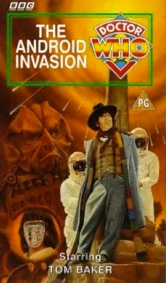
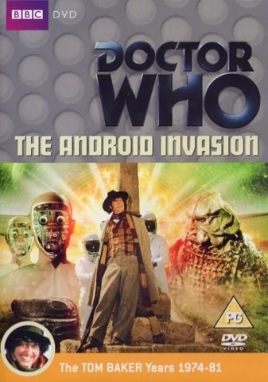
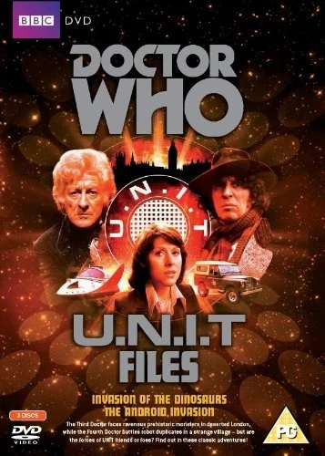
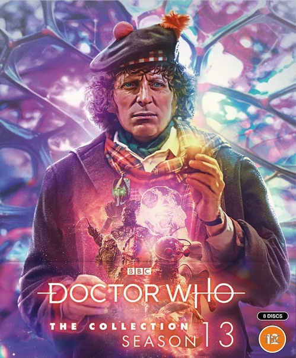
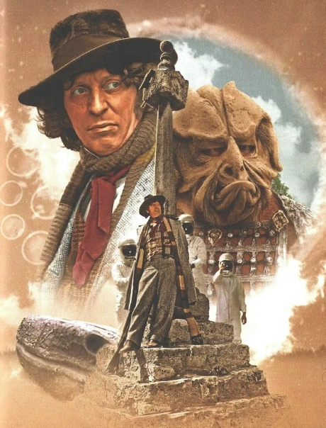
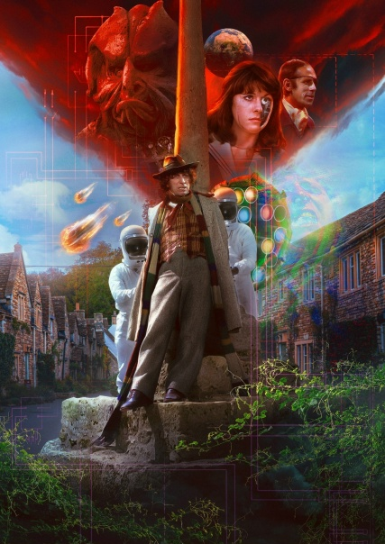

Эра Четвертого Доктора (13 сезон)
<<< НАЗАД ||| 4. Вторжение андроидов ||| ДАЛЬШЕ >>>
Субтитры: Русские и Английские |  |
|---|---|
с обновлением визуальных эффектов (cunningmunki) Субтитры: отсутствуют | |
The Android Invasion
Дата выхода: 22 ноября - 13 декабря 1975
Формат: 4 эпизода по 25 мин.
 помощник |  помощник |
ТАРДИС прибывает в английскую деревушку Дэблинг, но что-то не так: улицы пусты, люди ведут себя странно, а знакомые лица ЮНИТ — Гарри, Бентон — вдруг кажутся чужими. Доктор и Сара Джейн оказываются в ловушке, где каждый встречный может быть точной копией настоящего человека. За всем стоят краалы, готовящие захват Земли с помощью армии андроидов-двойников. Последнее появление Гарри Салливана и Бентона в сериале, а параноидальная атмосфера «никому нельзя доверять» делает серию одной из самых тревожных в сезоне.
 VHS - 1995 |   DVD+Boxset - 9 января 2012 |  Blu-ray - 20 октября 2025 * Версия в нашей группе |
|---|





Трейлер: